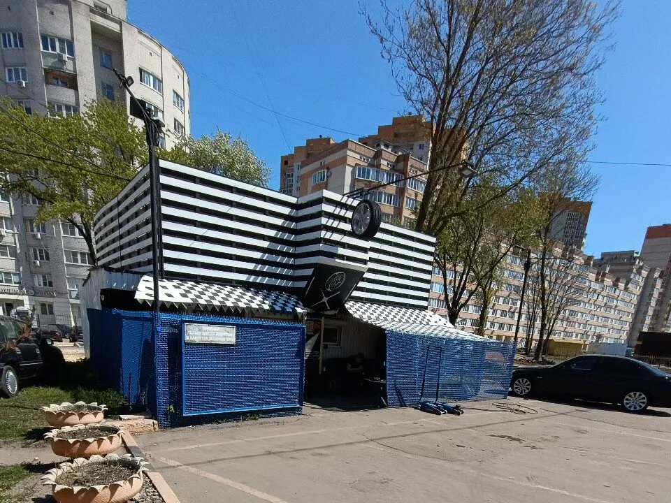
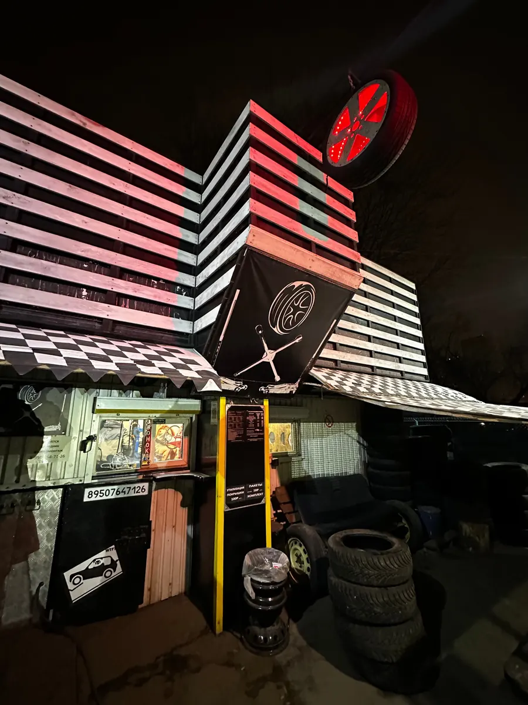
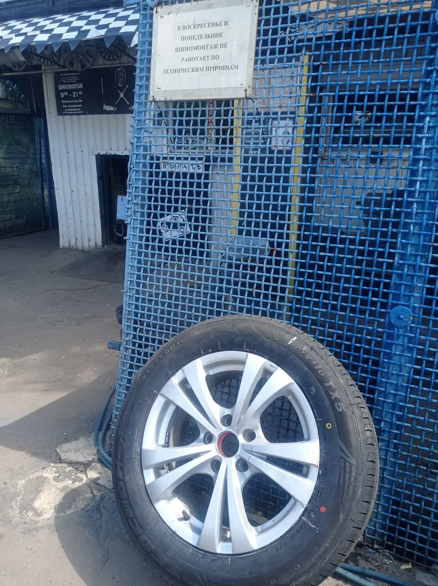
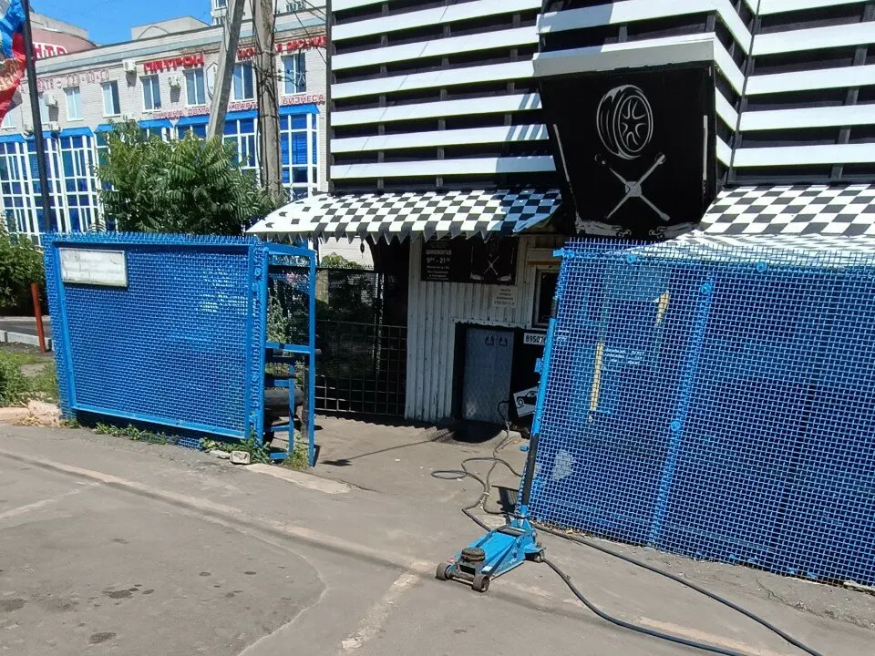

Шиномонтаж · Воронеж
Шиномонтаж в Воронеже, Московский проспект: запись онлайн
Переобувка, балансировка, ремонт проколов. Запишитесь на удобное время, работаем каждый день.
- Каждый день 09:00–21:30
- Балансировка колёс
- Запись на удобное время

Цены
Цены взяты с карточки на Яндекс Картах. Где написано «уточнить», сумму подскажут при записи.
Шиномонтаж
- Переобувка комплектауточнить
- Балансировка колёсуточнить
- Снять и поставить колесоуточнить
Ремонт
- Ремонт проколауточнить
- Подкачка колёсуточнить
Точную стоимость работы подтверждают при записи.
Как проходит
- 01
Записались на время
Выбираете услугу, день и время в форме выше или звоните.
- 02
Приехали к назначенному часу
Приезжаете к выбранному времени – машину принимают в боксе.
- 03
Мастер делает работу
Шиномонтаж, балансировка или ремонт – по выбранной услуге.
- 04
Забрали машину
Стоимость каждой операции обговариваем заранее.



Что есть у нас
Каждый день
Работаем без выходных с 09:00 до 21:30.
Балансировка
Балансировка колёс при переобувке.
Ремонт проколов
Заплатка или жгут – по состоянию шины.
Отзывы с Яндекс.Карт
«Лучший автосервис! Цены очень демократичные. Делают быстро. Очередей нет. Даже в пики сезона ребята активно работают, и именно по этой причине очередей нет. Отлично балансируют колеса! Ребята знают своё дело!!!»
Сергей Борисов · 4 июня
«Отличный шиномонтаж. Сотрудники вежливые. Не пытаются навариться на "придуманных" другими сервисами проблемах. Дают дельные советы. Всё супер! Обслуживание быстрое, цены бюджетные»
Сергей Чепик · 13 июня
«Отличный шиномонтаж, приехал с тем, что чуть спускало колесо. Оперативно помогли, подсказали, подкачали Колесо , и я потратив 3 минуты поехал дальше.»
Максим Моисеенко · 15 октября 2025
Отзывы с карточки на Яндекс.Картах, без правок.
Частые вопросы
Как записаться?
Выберите услугу, день и время в форме выше или позвоните +7 (950) 764-71-26.
Когда вы работаете?
Каждый день с 09:00 до 21:30.
Где вы находитесь?
Воронеж, Московский проспект, 84З.
Запишитесь на удобное время
- Адрес
- Московский проспект, 84З, Воронеж
- Часы
- Каждый день 09:00–21:30
- Телефон
- +7 (950) 764-71-26